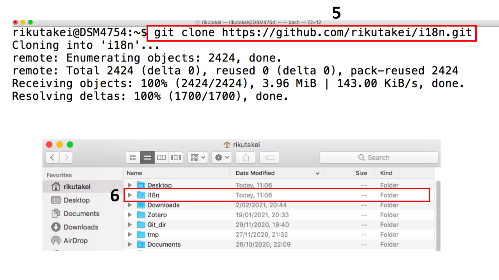
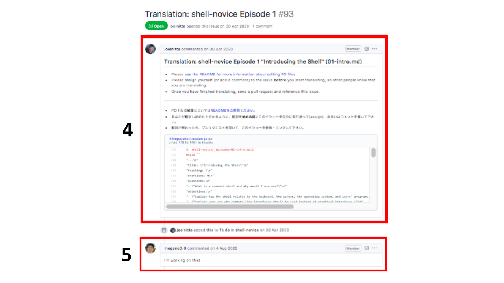
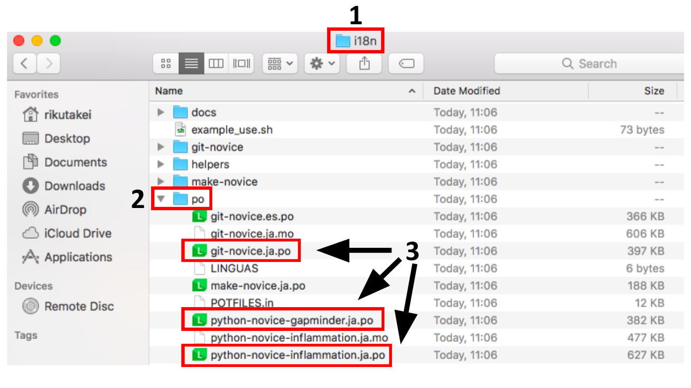
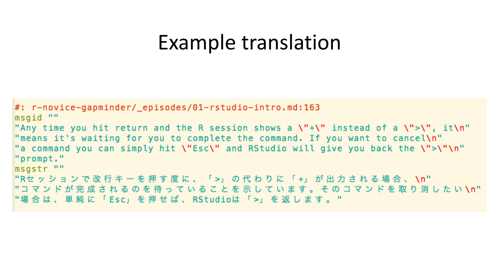

翻訳のクイックガイド
リポジトリをforkする
- “Fork” ボタンをクリックします

あなたの fork を CloneもしくはDownload する
あなたのアカウントのi18nリポジトリにいることを確認します
“Clone” をクリックします
“HTTPS” をクリックします
クリップボードのアイコンをクリックします (これでURLがコピーされます)
ターミナル(もしくはコマンドプロンプト)に移動し “git clone <コピーしたURLをここに貼り付ける>” を実行します
“i18n” フォルダができていることを確認します


どのレッスンを翻訳するか決める
SWC-jaの i18n リポジトリに移動します
“Issues” をクリックします
タイトルに “Translation:” がある issue のどれかをクリックします
説明を読みます
この issue にコメントし、あなたがこの翻訳に取り組むことをSWC-jaのメンバーに知らせます (コメントの例:「私はこれに取り組みます!!」)


翻訳する
“i18n” フォルダに移動します
“po” フォルダに移動します
“.ja.po” のファイル拡張子も持つファイルを見つけます
“.ja.po” ファイルをお気に入りのPOエディターで翻訳するか、直接編集します

ファイルを直接編集する場合
“msgid” は変更しないようにします
“msgstr” ブロックの”“の内(間)を翻訳します

